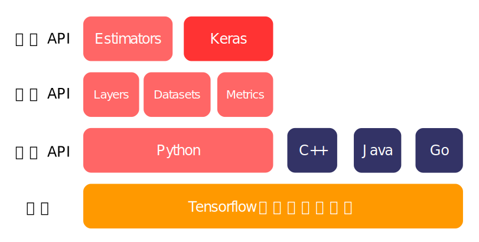

扉页¶
摘要
Tensorflow总纲，写给初学者们。本页面将简述Tensorflow的基本原理，结构设计以及版本更新。读者亦可在本页找到本教程将提供给读者对Tensorflow怎样的认识。
注意
由于技术限制，现在中文搜索功能无法完善，请注意当搜索关键词的时候自行分词，例如：
开放源代码软件库
无法搜到任何内容。但可以搜索
开放 源代码 软件 库
即可确保索引到上述内容。
Tensorflow总说¶
Tensorflow官网
TensorFlow™ 是一个开放源代码软件库，用于进行高性能数值计算。借助其灵活的架构，用户可以轻松地将计算工作部署到多种平台（CPU、GPU、TPU）和设备（桌面设备、服务器集群、移动设备、边缘设备等）。TensorFlow™ 最初是由 Google Brain 团队（隶属于 Google 的 AI 部门）中的研究人员和工程师开发的，可为机器学习和深度学习提供强力支持，并且其灵活的数值计算核心广泛应用于许多其他科学领域。
Tensorflow治学¶
写在所有内容之前，读者不得不看以下几个页面，本教程所述内容大略来自于对这些资料的研读。
- Tensorflow官网(中/英文): https://www.tensorflow.org/
- Keras中文文档: https://keras-zh.readthedocs.io/
- Tensorflow 2.0前瞻(英文): https://medium.com/tensorflow/effective-tensorflow-2-0-best-practices-and-whats-changed-a0ca48767aff
- Tensorflow 2.0前瞻(中文): https://zhuanlan.zhihu.com/p/50049041
提示
特别值得注意的是，现在官方文档至少在教程部分，已经支持中英双语。相比官方文档，我们的教程更侧重于以搭建工程为导向的设计。然而现在官方文档的翔实可读程度，确实不可错过。另一方面，Keras的官方中文文档似乎已不再更新，上面提供的原官方中文文档译者现在正在更新、维护的版本。
大略来说，学习Tensorflow主要应当依赖于官方文档的介绍。敝人自r1.4版开始入门Tensorflow，即是通过学习官方文档的教程来快速上手。相比四处蒐集资料，官方文档能提供一个完整、系统、完全贴合时下最新API的例子，帮助用户建立一个与Tensorflow各个功能合宜的使用习惯。若是通过在Github上检索他人的project，固然是一个很好的上手办法，但是往往就会遗漏某些重要的功能而不学。例如，Tensorflow自带的网络存取和Tensorboard API，在时兴的一些project中，经常会因方便之故，以numpy的IO来代替。笔者以为，如此培养起来的使用习惯，可谓走入偏门。当然，从这一点来说，本教程也亦复如是，即使笔者写下这些内容的时候，参照的乃是时下最新的API，时间一久，难免会过时。倘若笔者懒惰一些，不再时时更新本教程，那么本教程也就入不足取之流了。
虽然如此，教程也有并不合宜的地方。最大的问题莫过于Tensorflow本身，它有着日新月异的变化，此时能圆转如意地使用的API，到了彼时也许就成了废案。这就导致Tensorflow的官方教程也不断更新。r1.4时，教程还主要集中在如何使用“底层”API上，到了r1.9.0，就已经变成基本围绕着tf.keras设计的思路了。最新消息显示，即将上线的Tensorflow 2.0，将会彻底抛弃过去的“中层”API以下的全部方法，tf.layers, tf.contrib都将被移除，倘若长期墨守成规，局限在入门时候的一套技术上，迟早会被官方库如此迅速的更新所弃。这也是无可奈何之事。毕竟Tensorflow仍然处于不断改进之中。倘若希望追求一个更加稳定、长期可用的库，keras或许是一个不错的选择。
故而，本教程将基本基于Tensorflow现在的版本(r1.13)展开介绍。本教程既可以看作一个入门教程，也可以看作是本人重新自学新版Tensorflow规范化API的一个手记，故而命名本教程为“手札”。读者不妨跟着笔者的思路，有如与笔者共学一般读下来本教程。
Tensorflow原理¶
一个标准的Tensorflow工作流可以表示成这样：
与一般的计算库不同，Tensorflow的执行流程大体可以分为两步：
- 构造流程: 在这一步，Tensorflow根据用户代码构造一个数据流图(dataflow graph)。所谓数据流图，指的是由一系列张量(Tensor)构成的符号运算集合。就如同一张流程图一样，在这一阶段，尽管用户定义了每一步的运算（从简单的加减乘除到复杂的网络单元），但是没有任何运算被执行。就像一个程序员撰写代码一样，Tensorflow在这一步，将用户的代码转换成它的“机器语言”，但是网络还没有进入被使用的阶段。
- 执行流程: 在这一步，Tensorflow将计算用户指定的某个Tensor的输出结果。要得到一个Tensor的输出，则必须得计算它一系列的依赖变量。例如，我们已知y = x_1 + x_2, x_2 = z_1 \times z_2。那么，如果Tensorflow要得到y的结果，它就必须先计算x_2。这个过程被完全地封装起来，从用户看来，我们只需要调用y的输出即可，不需要关心Tensorflow是怎样按照流图完成计算的。
因此，典型的Tensorflow式的语言风格也可以这样划分：
- 构造流程: 用户定义整个网络的符号运算，指定网络各个节点的属性、输入和输出。这些代码往往被写成一个函数（例如
def construct():） - 执行流程: 创建一个Session，在Session内调用构造函数，然后输入数据，得到并保存输出结果。必要情况下，还需要导入导出网络参数。
这里提到会话(Session)。Session如同一个Tensorflow虚拟机，在一个Session打开的时候，设备的计算资源（GPU, CPU, 带宽等）才被加载。Session又如同一个工人，用户撰写的网络构造代码如同车间，输入的数据如同商品，“工人（Session）”利用预定义好的“车间（流图）”将可以快速、批量地生产这些“商品（数据）”。这样地设计保证了一些外围的代码，例如指定网络参数的名称、函数的属性等操作，不需要重复进行，从而确保处理数据的时候，总是执行必要的代码，加快运算速度。
另一方面，构造-执行的结构还封装了许多提高运算效率的特性，例如多线程。尽管用户定义网络构造的时候，所写的代码是按照逻辑顺序的、线性的。但实际运行的时候，Tensorflow可以自行发现网络的哪些部分可以被同时运行，从而利用多核系统的计算资源。这些过程也是被完全封装起来的，用户并不需要花费心思去专门进行这些调整。
须知
在Tensorflow已经转变为Keras导向的现在，Session的调用被Keras API封装了起来，从用户的角度来看，现在已经不再需要手动调用Session。
Tensorflow API架构¶
下图显示了当前Tensorflow-API的组织形式

Tensorflow在多个平台上均有部署，包括Python, C++, Java, Javascript, Go等，未来还可能支持更多的语言。然而，不同平台上，API的使用方式和代码风格是大不相同的。例如，Python的语言风格目前已经朝向Keras转变，而Javascript仍倾向于使用中层API；C++和Java偏向于使用底层API编写程序。本教程只针对时兴Python的API编写，除非涉及到特定的专题，不会讨论其他语言上Tensorflow的用法。
一般而言，Tensorflow将API面向划分为三个层次：
- 高层API (High level): 包括Estimators和Keras；
- 中层API (Mid level): 包括layers, datasets, loss和metrics等具有功能性的函数，例如网络层的定义，Loss Function，对结果的测量函数等；
- 底层API (Low level): 包括具体的加减乘除、具有解析式的数学函数、卷积、对Tensor属性的测量等。
从r1.4入门的用户，所接受的训练往往是从底层API开始，使用自己的代码风格构建对应中层API的函数，然后再用自己定义好的中层API构建网络。在这种代码风格的驱使下，用户除了需要定义各个网络层具体的表达式，还需要设计输入输出的接口，用来调用优化器(optimizer)的接口等操作。
另一种使用方式，是从中层API开始，直接使用预定义好的网络层构建网络，这样的代码风格会节省一部分时间，相当于几乎不再需要接触底层API，但是在输入输出、网络训练和测试等更高层的模块设计上，和底层API用户的代码风格相似。
Estimators是从r1.4就已经存在的API了，它可以被看成是已经集成在Tensorflow里的完整的网络。因此，Estimators往往适合分发、需求不高的应用，但是并不适合使用Tensorflow的研究者。尽管至今为止，Tensorflow仍然对Estimators倍加推崇，但本教程将完全不涉及这方面的内容。
另一个高层API是Eager Execution，从r1.9起，Tensorflow就加入了这种新的使用模式，并且在Tensorflow 2.0中，它仍然将会被保留。Eager摈弃了上述的构造-执行流程，任何对Tensor的定义会被立时计算、并可得到结果。对于需要进行小规模的调试、检查API功能的用户而言更加方便。但是，据一些用户的反响，现在Eager还没有做到和之前API的完全兼容，本教程将基本不涉及Eager的用法。
因此，Keras API将是本教程的重中之重。使用本教程的用户，可以对照目前的官方文档，跟进本教程的思路，自己逐步实现各个project的设计。使用Keras风格的设计，代码量会明显少于前面提到的各种风格（Estimators除外）。事实上，tf.keras和底层API之间具有一定的兼容，这样的编写风格能让我们在满足自己设计的派生功能的基础上，尽可能使用规范化、预定义的API单元，从而减少代码出错的可能性。通过对本教程TF 1.x版的学习，对未来2.0版的上手也会带来莫大帮助。
金宇琛(@cainmagi)，2019年3月2日
Yuchen Jin(@cainmagi), Mar. 2, 2019
教程导读¶
接下来，本教程将会涉及
- 从线性问题入门: 如何使用Tensorflow完成一个简单的线性分类设计，我们将从Hello World开始，逐步过渡到一个具有核函数的非线性问题project。
- Hello world: 第一个Tensorflow程序。
- 线性分类: 一个简单的二分类问题。
- 线性回归: 一个同样简单的，线性拟合问题。
- 非线性回归: 拟合一个简单的，可以表达出解析式的非线性函数。
- 非线性分类: 使用线性分类器对非线性分布的数据进行分类。
- 训练与测试分立: 从这一章开始，并试图解决几个更加复杂的实际问题。这里涉及到的project相对更大、更完整，训练往往需要一定时间才能完成。因此，在本章，所有项目的训练、测试环节都会分开，我们将从这里开始，使用TensorBoard跟踪我们的训练情况，并介绍如何存取神经网络。
- Super Resolution: 使用神经网络进行图像像素插值。
- Sparse Coding: 使用线性的词典学习(dictionary learning)来进行图像像素插值。
- Generitive Model: 使用时兴的生成模型(Generitive Model)来完成图像风格的转换。
- 原生的数据管理: 从这一章开始，我们将纳入Tensorflow自带的数据管理API。实际上，很多用户并不习惯使用这些API，往往倾向于自己完成数据的导入导出。虽然这并非一个复杂的工作，但据Tensorflow的文档，原生的数据管理内部实现了多线程，本身更适合用于提高数据IO的效率。读者可以酌情选择是否需要阅读本章。
- 使用MINIST数据集: 使用原生的数据管理来IO一个现成的MINIST数据集，这一节改自官方文档教程。
- 使用RNN处理文章: 通过LSTM模型来进行文本分类，并使用原生的数据管理来IO一个现成的IMDB数据集，这一节改自官方文档教程。
- 使用RBM生成音频: 通过限制玻尔兹曼机(RBM)来编写一个简单的音乐生成器，这一节改自llSourcell/Music_Generator_Demo。
- 其他的高级技巧: 本章将介绍一些特殊的、利用底层API技巧，使得用户能更灵活地定制Tensorflow-keras，从而实现一些仅依靠原生库不能实现的功能。